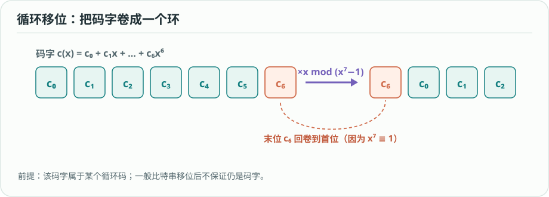
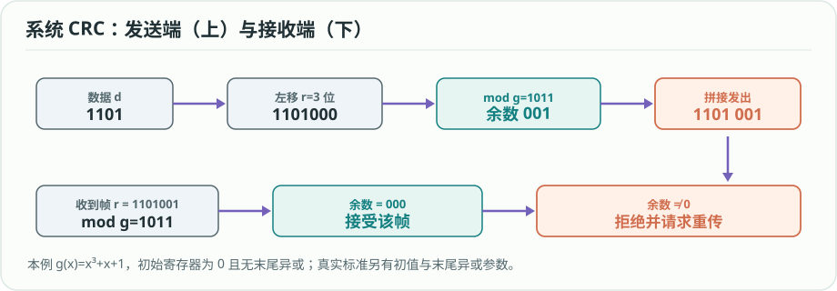
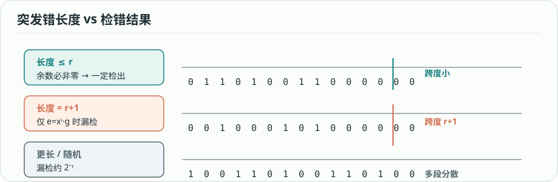

几十个校验位，凭什么守住几个 GB 的文件？
下载一个几 GB 的安装包时，你无法逐字节回读比对。真正可行的做法是：发送端对整段数据算出一个很短的指纹附在末尾，接收端用同样的规则重算。指纹对不上就说明数据被改动过。
CRC（Cyclic Redundancy Check，循环冗余校验）就是这种指纹，它几乎出现在每个数字链路里：以太网、PCIe、USB、Bluetooth、ZIP、PNG、gzip。它背后的数学对象是循环码（cyclic code）——线性分组码的一个子类。上一章用向量和矩阵描述码，这一章改用 GF(2) 上的多项式，因为“多项式除以生成多项式”可以被几个移位寄存器和异或门直接实现。
把码字写成 GF(2) 上的多项式
设码字长度为 n，把它写成系数向量 (c₀, c₁, …, cₙ₋₁)，每个 cᵢ∈{0,1}。我们为它配一个多项式：
系数之间的加减都是模 2 的异或：1⊕1=0，1⊕0=1。于是“右移一位、末位回卷到首位”这样的循环移位，正好等价于把多项式乘以 x 再对 xⁿ−1 取模——因为 xⁿ≡1。

循环码的定义因此只有一句话：它是 GF(2)ⁿ 的一个线性子空间，且对循环移位封闭——任何合法码字移位后仍是合法码字。这条约束看似温和，却让整个码可以被单个多项式“生成”。
生成多项式决定了整个循环码
一个 (n, k) 循环码中，次数最低的非零码字多项式记为 g(x)，它被称为生成多项式，次数恰好为 n−k。两个关键事实：
① 每个码字都是 g(x) 的倍数：c(x)=m(x)·g(x)，其中信息多项式 m(x) 的次数 ≤ k−1，共 2ᵏ 种，恰好给出 2ᵏ 个码字。② g(x) 必须整除 xⁿ−1，反过来每个这样的因式都能生成一个循环码。
看一个真实可检的 (7,4) 算例。取 g(x)=1+x+x³（系数向量 1101），它在 GF(2) 上确实整除 x⁷−1。取信息多项式 m(x)=1+x²+x³（向量 1011）。逐项相乘再按 2 类加：
| 乘积项 | 来源 |
|---|---|
| 1 | 1·1 |
| x | 1·x |
| x² | x²·1 |
| x³ | 1·x³ ⊕ x²·x ⊕ x³·1 = 1 |
| x⁴, x⁵, x⁶ | x³·x, x²·x³, x³·x³ |
于是 c(x)=1+x+x²+x³+x⁴+x⁵+x⁶，码字为 1111111。注意 x³ 项出现了三次，按 1⊕1⊕1=1 归并；少并一次或把异或当加法，都会得到错误的码字，这是手工算多项式乘法最容易翻车的地方。
把 g 的 k=4 个循环右移堆成行，就得到生成矩阵 G。例如从 1101000 开始逐行移位，每行都是合法码字，这正是“每个码字都是 g 的倍数”的矩阵写法。
CRC：让数据乘 x^r 再取余数
循环码的生成形式 c=m·g 会把信息位打乱；工程上更希望“原始数据照旧，校验位另贴在后面”。这就是系统码（systematic）形式：把数据多项式 d(x) 先左移 r 位（即乘 xʳ），除以 g(x) 得到余式 ρ(x)，再把余数拼在末尾。
因为 ρ(x) 就是除法余式，T(x) 必能被 g(x) 整除（模 2 下加减相同，⊕ρ 等于减 ρ）。接收端收到 T(x)⊕e(x) 后重算除余式：e=0 时余式为 0；e≠0 时余式一般不为 0，就报错。这个余式就是 CRC 的 syndrome。
| 步骤 | 示例（d=1101, g=x³+x+1=1011, r=3） |
|---|---|
| 数据左移 r 位 | 1101 · x³ → 1101000 |
| 对 g 取余式 | 1101000 mod 1011 → 001 |
| 拼接发出 | 1101 001 = 1101001 |
| 接收重算 | 1101001 mod 1011 → 000，接受 |

LFSR：把多项式除法摊成移位与异或
多项式长除法在 GF(2) 上只有两种动作：看当前最高位，若为 1 就异或掉整个 g(x)，否则什么都不做；然后下移一位。把 r 个余数位直接存进寄存器，用一个时钟拍完成一步，就得到 LFSR（线性反馈移位寄存器）。
具体地，寄存器宽度为 r，g(x) 的系数决定哪些抽头接异或门：反馈位 = (寄存器最高位) ⊕ (下一个输入位)；寄存器左移一格，反馈位从最低位补入。整个数据流走完之后，寄存器里剩下的就是 ρ(x)。每个时钟处理 1 比特，硬件上只是一排触发器和几个异或门。

每拍只喂 1 比特太慢了。工程上先算出一张 256 项的查表，一次处理 1 字节，吞吐提升 8 倍，代价只是 256 个表项。这是 CRC-32 能跑上 Gbps 的主要原因之一。
CRC 究竟能检测哪类错误？
检错能力可以用生成多项式与错误多项式 e(x) 的整除关系精确描述。设 CRC 有 r 个校验位。一条差错被“漏检”当且仅当 g(x) 整除 e(x)。
| 错误类型 | 是否必然检测 | 理由 |
|---|---|---|
| 任意单比特错误 | 一定 | g(0)=1 ⟹ 次数 i 的 xⁱ 不能整除 g |
| 长度 ≤ r 的突发错 | 一定 | 突发多项式次数 < r，低于 g 的次数 |
| 奇数个比特错 | 当 (x+1)∣g 时一定 | 奇数重 e(1)=1，但 (x+1)∣g∣e 会逼出 e(1)=0 |
| 长度 r+1 的突发错 | 概率 2−(r−1) 漏检 | 只有 e(x)=xⁱ·g(x) 这一种形状能整除 |
| 更长突发 / 随机错 | 约 2−r 漏检 | g 的次数为 r，随机倍数概率约为 2−r |

以 r=32 为例，随机错误漏检概率约 2⁻³² ≈ 2.3×10⁻¹⁰。这是统计意义上的误码率，不是对“任意篡改”的保证。
把检查和局限写成可测试代码
本仓库的 Python 样例按位实现两个 CRC-32 变体，并用标准校验值断言。标准里用字符串 123456789 作自检输入：zlib / PNG / 以太网用的反射变体（生成多项式 0xEDB88320）得到 0xCBF43926，而非反射的 0x04C11DB7 变体得到 0xFC891918；两者不可混用。
from examples.channel_coding import crc32_reflected, crc32_msb
check = b"123456789"
assert crc32_reflected(check) == 0xCBF43926 # zlib / binascii.crc32
assert crc32_msb(check) == 0xFC891918 # 未反射变体
assert crc32_reflected(b"") == 0x00000000 # 空输入也定义良好固定数据 1101、生成多项式 1011（r=3）；交互只研究单比特翻转，与正文算例一致。
多项式除法与 LFSR 是同一个算法的两种写法：前者适合手算与证明，后者适合硬件。下一章的卷积码则是另一种“流式”思路——它不把比特分块，而是让输出持续依赖最近的输入历史，并用 Viterbi 算法在所有路径中找最可能是哪一条。
来源与延伸阅读
- W. W. Peterson & D. T. Brown (1961), Cyclic Codes for Error Detection：循环码用于检错的奠基性论文，突发错检测性质。
- P. Koopman & T. Chakravarty (2004), CRC Polynomial Selection for Embedded Networks：不同生成多项式的检错能力对比。
- MIT 6.441 (2016) Linear / Cyclic Codes：循环码的代数结构与生成多项式。
- Cover & Thomas, Elements of Information Theory：分组码与纠错编码的一般背景。